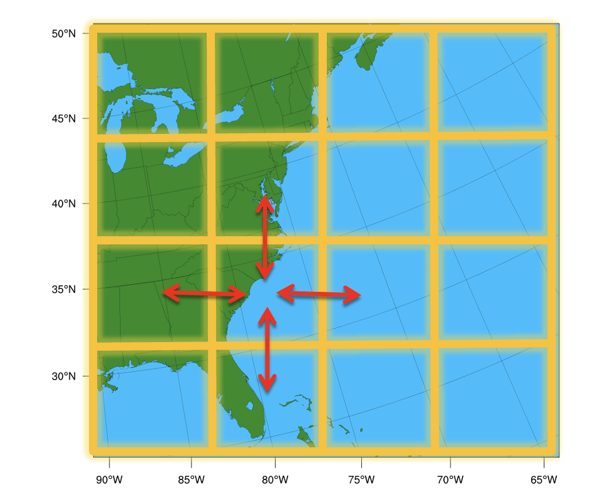
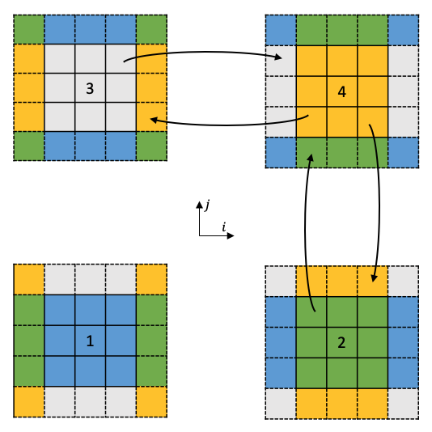

Chapter 10: Domain Parallel¶
Domain Parallelism (also called spatial parallelism or domain decomposition) distributes different regions of a single input sample across multiple GPUs so they can be processed simultaneously.
This technique is particularly useful for scientific AI workloads such as weather, climate, and physics simulations where inputs are extremely large multi-dimensional grids.
Instead of giving each GPU a different training sample (as in data parallelism), multiple GPUs cooperate to process one sample. Each GPU handles a different "tile" of the spatial input, and they exchange boundary data ("halos") to ensure correct results at tile edges.
This is directly inspired by domain decomposition methods used in classical numerical weather prediction (NWP) for decades. Models like WRF have long divided the globe into spatial subdomains, assigning each to a different processor. Domain parallelism brings this same idea to deep learning. To learn about WRF domain decomposition, see this repo.
Why Domain Parallel?¶
In LLMs, GPU memory is dominated by model parameters (billions of weights). In scientific AI, the situation is reversed — models are often small (a few million parameters), but activations dominate memory because the input data is spatially massive.
What goes on to the GPU memory?
During training, GPU memory is consumed by four things:
1. Model parameters — small for most scientific models
2. Active data (inputs/outputs) — large at high resolution
3. Optimizer states (gradients, moments) — proportional to parameters
4. Intermediate activations — saved for the backward pass, proportional to both model depth and input resolution
As layers stack up, activation memory grows with depth and resolution. A U-Net on a 1024x1024 grid can easily require 10-100x more activation memory than parameter memory. This is why DDP and FSDP alone aren't enough — they shard parameters and gradients, not activations. Domain parallelism is the only strategy that addresses activation memory.
Also, read Chapter 1 for a detailed breakdown of GPU memory usage.
Consider a domain with 1440×1440 grids and 100+ vertical levels. A single forward pass through a model on this grid might need 100+ GB of activation memory, which is far more than a single GPU can hold.
Domain parallelism splits the grid into tiles, each processed by a different GPU. Each GPU only needs to store activations for its tile, reducing memory requirements by 1/N for N GPUs.

When to use domain parallelism?
Domain parallelism is the best fit when your input is so large that even batch_size=1 doesn't fit, and your model uses spatial operations
(convolutions, normalizations, attention, pooling).
What is Halo Exchange?¶
A convolution requires a neighborhood of pixels (the stencil) defined by the kernel size $K$. When the domain is sharded, pixels at the boundary lack the data needed for calculation. To resolve this, a "halo" or "ghost zone" is established—an overlapping region synchronized between neighboring processors. Before each convolution, GPUs exchange their boundary data with neighbors so that each GPU has the necessary context to compute correct outputs at tile edges. This communication pattern is called a halo exchange.
Naive split (3×3 convolution):
GPU 0 tile GPU 1 tile
┌─────────┐ ┌─────────┐
│ · · · · │ ← border → │ · · · · │
│ · · · · │ │ · · · · │
│ · · · x │ │ x · · · │
└─────────┘ └─────────┘
▲ ▲
│ │
This pixel This pixel
needs data needs data
from GPU 1 from GPU 0
Without the neighbor's data, border pixels get wrong values.
You can demonstrate this on a single device in PyTorch:
import torch
full_image = torch.randn(1, 8, 1024, 1024)
left_image = full_image[:, :, :512, :]
right_image = full_image[:, :, 512:, :]
conv = torch.nn.Conv2d(8, 8, 3, stride=1, padding=1)
full_output = conv(full_image)
left_output = conv(left_image)
right_output = conv(right_image)
recombined = torch.cat([left_output, right_output], dim=2)
torch.allclose(full_output, recombined) # False!
Inspecting where the outputs disagree reveals the problem is exactly at pixels 511 and 512 along the height dimension — right where the data was split. The convolution can't see across the border.
The fix is to exchange the missing border row before convolving:
# Pad each half with 1 row from the neighbor (this is a halo exchange)
padded_left = torch.cat([left_image, right_image[:, :, 0:1, :]], dim=2)
padded_right = torch.cat([left_image[:, :, -1:, :], right_image], dim=2)
# Conv on padded data, then trim the extra output pixels
left_output = conv(padded_left)[:, :, :-1, :]
right_output = conv(padded_right)[:, :, 1:, :]
recombined = torch.cat([left_output, right_output], dim=2)
torch.allclose(full_output, recombined) # True!
This manual padding is exactly what halo exchange automates across GPUs.

Practical Implementation¶
Option A: PyTorch's DTensor¶
PyTorch DTensor (Distributed Tensor) provides sharding primitives that transparently handle distributed logic using the Single Program, Multiple Data (SPMD) model. It supports Shard(dim), Replicate(), and Partial() placements on a DeviceMesh.
DTensor works well for uniform sharding across regular grids, but it assumes each shard has the same shape (via torch.chunk). This makes it less suited for irregular domains like point clouds or non-rectangular meshes.
Option B: NVIDIA PhysicsNeMo ShardTensor (Recommended)¶
PhysicsNeMo provides ShardTensor, a high-level abstraction built on PyTorch's DTensor that automates what we did manually above. Instead of hand-coding halo exchanges and gradient communication, ShardTensor provides:
- Automatic halo exchange — operations are intercepted at the functional level; communication happens transparently without manual padding or send/recv
- Correct gradients —
mean().backward()on aShardTensorautomatically distributes gradients to their proper shards - Irregular data support — unlike
DTensor's uniformtorch.chunk,ShardTensorhandles meshes, point clouds, and unevenly-distributed domains
Under the hood, ShardTensor extends PyTorch's DTensor with:
- A specification that tracks the shape of each local tensor along sharding axes (critical for non-uniform data like point clouds)
- A dispatcher that intercepts operations at the functional level (higher
than
DTensor's dispatch level), falling back toDTensorwhen no custom implementation exists - Dedicated
sumandmeanreductions that correctly intercept and distribute gradients
Supported layers include convolutions, normalizations, upsampling/pooling, and attention layers.
Domain parallelism with ShardTensor performs best when:
- GPU kernels are large (big input data) — the communication-to-compute ratio stays small
- GPU kernels are non-blocking — the slightly higher overhead of domain parallelism still fills the GPU queue efficiently
To learn more about ShardTensor and domain parallelism, see the NVIDIA PhysicsNeMo docs and the domain parallel + FSDP tutorial.
Running the Examples¶
Start with the "why splitting fails" demo to build intuition:
# 1. See why naive splitting produces boundary artifacts
torchrun --standalone --nproc_per_node=4 \
scripts/07_domain_parallel_shardtensor/01_why_splitting_fails.py
# 2. Domain-parallel convolution with halo exchange
torchrun --standalone --nproc_per_node=4 \
scripts/07_domain_parallel_shardtensor/02_shardtensor_conv.py
# 3. Domain parallel training
torchrun --standalone --nproc_per_node=4 \
scripts/07_domain_parallel_shardtensor/03_domain_parallel_training.py
# 4. Full domain parallel + FSDP hybrid
torchrun --standalone --nproc_per_node=4 \
scripts/07_domain_parallel_shardtensor/04_domain_parallel_with_fsdp.py
Further Reading¶
- Domain Parallelism and
ShardTensor - Implementing New Layers for
ShardTensor - Domain Decomposition,
ShardTensor, and FSDP Tutorial
What's Next?¶
Now you know all seven strategies. Chapter 11 helps you choose the right one (or combination) for your specific workload.